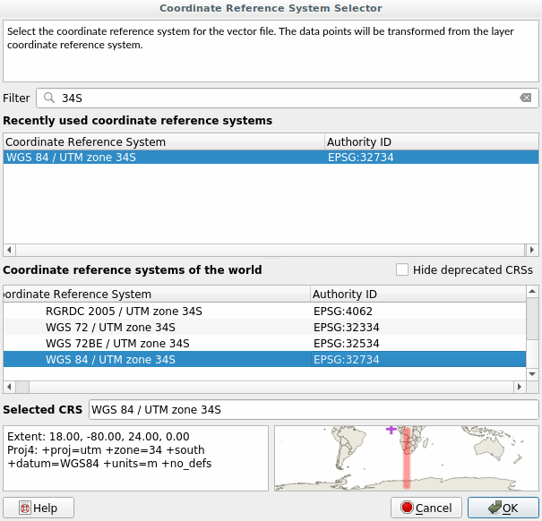
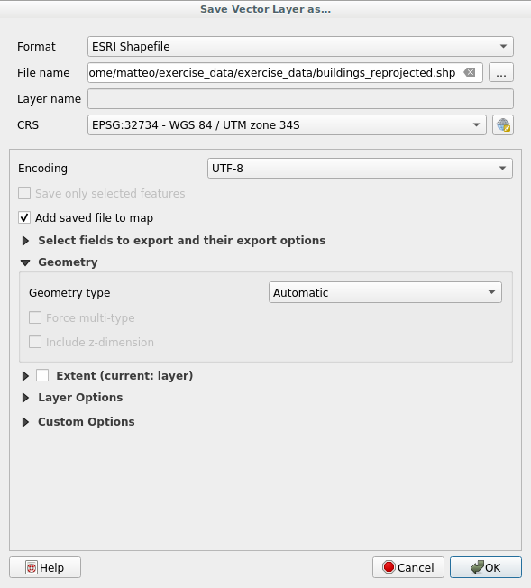
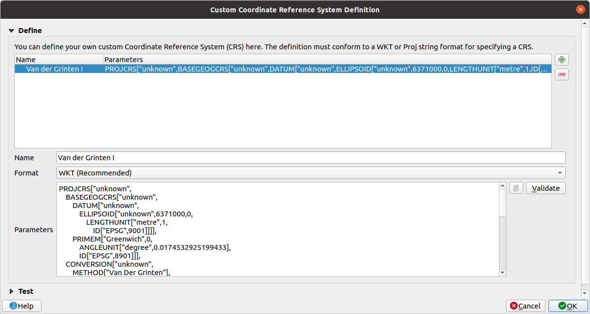

6.1. သင်ခန်းစာ- Data များအား ပုံရိပ်ချစနစ်ပြောင်းလဲခြင်းနှင့် အသွင်ပြောင်းလဲခြင်း (Lesson: Reprojecting and Transforming Data)
Coordinate Reference Systems (CRSs) အကြောင်း ထပ်မံပြောရပါမည်။ ယခင်က ထိုအကြောင်းကို အတိုချုံး ထိတွေ့ခဲ့သော်လည်း လက်တွေ့တွင် မည်သို့ဆိုလိုသည်ကို ဆွေးနွေးခဲ့ခြင်းမရှိသေးပါ။
ဤသင်ခန်းစာအတွက် ရည်မှန်းချက်- Vector dataset များကို reproject (ပုံရိပ်စနစ်တစ်ခုမှတစ်ခုသို့ပြောင်းခြင်း) ပြုလုပ်ရန်နှင့် အသွင်ပြောင်းလဲရန်။
6.1.1. ★☆☆ လိုက်လုပ်ကြည့်ပါ- ပုံရိပ်ချစနစ်များ (Follow Along: Projections)
ယခုလက်ရှိ data များအားလုံးရော မြေပုံကိုယ်တိုင်ပါ ရှိနေသည့် CRS ကို WGS84 ဟုခေါ်ဆိုပါသည်။ ၎င်းသည် data များကို ပြသရန်အတွက် အလွန်အသုံးများသော Geographic Coordinate System (GCS) တစ်ခုဖြစ်ပါသည်။ သို့သော် ပြဿနာတစ်ခုတော့ ရှိပါသည်၊ အောက်တွင် မြင်တွေ့ရပါလိမ့်မည်။
လက်ရှိမြေပုံကို သိမ်းဆည်းပါ
ထို့နောက်
exercise_data/world/world.qgsအောက်တွင် ရှိသော world map (ကမ္ဘာ့မြေပုံ) ကိုဖွင့်ပါ။Zoom In tool ကိုအသုံးပြု၍ South Africa သို့ zoom ချဲ့ကြည့်ပါ။
Screen ၏အောက်ခြေရှိ Statusbar ထဲရှိ Scale field တွင် စကေးတစ်ခုကို သတ်မှတ်ကြည့်ပါ။ South Africa ပေါ်တွင် ရှိနေစဉ် ထိုစကေးတန်ဖိုးကို
1:5 000 000(၁ အချိုး ၅ သန်း) သတ်မှတ်ပါ။Scale field ပေါ်တွင် ကြည့်နေပြီး မြေပုံကို တစ်နေရာမှတစ်နေရာသို့ pan (မြင်ကွင်းရွှေ့) လုပ်ကြည့်ပါ။
စကေးပြောင်းလဲသွားသည်ကို သတိထားမိပါသလား။ ထိုသို့ဖြစ်ရခြင်းမှာ 1:5 000 000 စကေးတွင် zoom ချဲ့ထားသော screen ၏အလယ်ဗဟိုဖြစ်ခဲ့သည့် point တစ်ခု၏ အဝေးသို့ ရွေ့သွားသောကြောင့်ဖြစ်သည်။ ထို point ပတ်ပတ်လည်တွင် စကေးသည် မတူညီကြပါ။
ဘာကြောင့်ဆိုသည်ကို နားလည်ရန် ကမ္ဘာ့လုံးကြီးတစ်ခုကို တွေးကြည့်ပါ။ မြောက်မှတောင်သို့ သွယ်တန်းနေသော မျဉ်းများရှိပါသည်။ ထို လောင်ဂျီကျုဒ်မျဉ်းများသည် အီကွေတာ၌ အဝေးကွာဆုံးဖြစ်ပြီး ဝင်ရိုးစွန်းများတွင် စုဆုံကြပါသည်။
GCS တစ်ခုထဲတွင် ကမ္ဘာအလုံးအဝန်းပေါ်တွင် လုပ်ဆောင်နေရသော်လည်း ကွန်ပျူတာ screen သည် အပြား ဖြစ်ပါသည်။ သင့်အနေဖြင့် စက်လုံးကို အပြန့်မျက်နှာပြင်ပေါ်တွင် ဖော်ပြရန်ကြိုးစားကြည့်သောအခါ distortion (ပုံပျက်ယွင်းခြင်း) ဖြစ်နေပါသည်၊ ၎င်းသည် တင်းနစ်ဘောလုံးတစ်လုံးကို ခွဲပြီး အပြား ပုံစံဖြန့်သောအခါ ဖြစ်ပေါ်လာသည်နှင့်ဆင်တူပါသည်။ ဆိုလိုသည်မှာ မြေပုံတစ်ခုပေါ်တွင် လောင်ဂျီကျုမျဉ်းများသည် တစ်ခုနှင့်တစ်ခု အကွာအဝေးတူညီစွာဖြင့် ရှိနေပြီး ဝင်ရိုးစွန်းများ၌ပင်လျှင် စုဆုံခြင်းမရှိပဲ အကွာအဝေးတူညီစွာရှိနေပါသည်။ ဆိုလိုသည်မှာ မြေပုံပေါ်တွင် အီကွေတာမှ ဝေးဝေးသို့ သွားလေလေ မြင်တွေ့ရသည့် object ၏စကေးသည် ကြီးလာလေလေဖြစ်သည်။ လက်တွေ့အရ ဆိုလိုသည်မှာ မြေပုံပေါ်တွင် စကေး တစ်သမတ်တည်းမရှိပါ။
ထိုအရာကိုဖြေရှင်းရန် Projected Coordinate System (PCS) တစ်ခုကို အသုံးပြုကြည့်ပါမည်။ PCS တစ်ခုသည် data ကို “ပုံရိပ်ချပေး” သို့မဟုတ် ပြောင်းလဲပေးပြီး စကေးပြောင်းလဲမှုများကို မှန်ကန်အောင်ပြင်ဆင်ပေးပါသည်။ ထိုကြောင့် စကေးကို တစ်သမတ်တည်းရှိနေစေရန် data ကို PCS တစ်ခုသို့ reproject လုပ်သင့်ပါသည်။
6.1.2. ★☆☆ လိုက်လုပ်ကြည့်ပါ- “On the Fly” Reprojection (Follow Along: “On the Fly” Reprojection)
Default အားဖြင့် QGIS သည် data ကို “on the fly” reproject ပြုလုပ်ပေးပါသည်။ ဆိုလိုသည်မှာ data ကိုယ်တိုင်သည် အခြား CRS တစ်ခုတွင်ရှိနေလျှင်ပင် QGIS သည်၎င်း data ကို သင်ရွေးချယ်ထားသော CRS တစ်ခုတွင်ရှိသကဲ့သို့ ပုံရိပ်ချ (project) ပေးနိုင်ပါသည်။
QGIS ၏ညာဘက်အောက်ခြေရှိ  Current projection ခလုတ်ကိုနှိပ်ပြီး ပရောဂျက်၏ CRS ကိုပြောင်းလဲနိုင်ပါသည်။
Current projection ခလုတ်ကိုနှိပ်ပြီး ပရောဂျက်၏ CRS ကိုပြောင်းလဲနိုင်ပါသည်။
ပေါ်လာသော dialog ထဲတွင် Filter field ထဲ၌
globalဆိုသည့်စာလုံးကို ရိုက်ထည့်ပါ။ Predefined Reference Systems field ထဲတွင် CRS အနည်းငယ်ပေါ်နေပါမည်။WGS 84 / NSIDC EASE-Grid 2.0 Global | EPSG:6933 ပေါ်တွင် click နှိပ်ပြီး OK ကိုနှိပ်ပါ။
South Africa ၏ ပုံသဏ္ဍာန် မည်သို့ပြောင်းလဲသွားသည်ကို သတိပြုကြည့်ပါ။ Projection များအားလုံးသည် ကမ္ဘာမြေပေါ်ရှိ အရာများ၏ အမြင်ပိုင်း ပုံသဏ္ဍာန်ကို ပြောင်းလဲခြင်းအားဖြင့် အလုပ်လုပ်ဆောင်ပါသည်။
Zoom to a scale of
1:5 000 000again, as before.ထပ်မံဥ
1:5 000 000စကေးသို့ zoom ချဲ့ပါ။မြေပုံကို pan (မြင်ကွင်းရွှေ့) လုပ်ကြည့်ပါ။
Notice how the scale stays the same! စကေးသည် အတူတူပင်ဖြစ်နေသည်ကို သတိပြုကြည့်ပါ။
“On the fly” reprojection ကို CRS မတူညီသော dataset များကို ပေါင်းစပ်ရာတွင်လည်း အသုံးပြုပါသည်။
South Africa အတွက်သာ data ပါရှိသော နောက်ထပ် vector layer ကို မြေပုံထဲသို့ ထည့်သွင်းပါ။
exercise_data/world/RSA.shpအနေဖြင့် ရှာတွေ့ပါလိမ့်မည်။၎င်း၏ CRS ကို မြန်မြန်ကြည့်ရှုနိုင်မည့်နည်းမှာ legend ထဲရှိ အဆိုပါ layer ပေါ်တွင် mouse ကိုတင်ထားခြင်းဖြစ်သည်။ ၎င်းသည်
EPSG:3410ဖြစ်ပါသည်။သင်ဘာကို သတိပြုမိပါသလဲ။
Layer သည် continents layer နှင့် CRS ချင်းမတူသော်လည်း ၎င်း layer ကိုမြင်တွေ့နိုင်မည်ဖြစ်သည်။
6.1.3. ★★☆ လိုက်လုပ်ကြည့်ပါ- Dataset တစ်ခုကို အခြား CRS အဖြစ်သိမ်းဆည်းခြင်း (Follow Along: Saving a Dataset to Another CRS)
တစ်ခါတရံတွင် ရှိနေပြီးသား dataset တစ်ခုကို အခြားသော CRS ဖြင့် export ထုတ်ရန် လိုအပ်နိုင်ပါသည်။ Layer ပေါ်တွင် အကွာအဝေးတွက်ချက်မှုများကို လုပ်ဆောင်လိုလျှင် ထို layer သည် projected coordinate system တစ်ခုဖြစ်ရမည်ကို နောက်လာမည့် သင်ခန်းစာတွင်မြင်တွေ့ရမည်ဖြစ်သည်။
‘on the fly’ reprojection သည် project နှင့်သာ ဆက်စပ်မှုရှိပြီး layer များနှင့်ဆက်စပ်မှုမရှိသည်ကို သတိထားပါ။ ဆိုလိုသည်မှာ layer တစ်ခုကို မှန်ကန်သော တည်နေရာတွင် မြင်တွေ့နေလျှင်ပင် ၎င်း layer သည် project နှင့် CRS မတူညီပဲ ရှိနေနိုင်ပါသည်။
Layer ကို အခြားသော CRS ဖြင့် လွယ်လွယ်ကူကူ export ထုတ်ယူနိုင်ပါသည်။
training_data.gpkgမှbuildingsdataset ကိုထည့်သွင်းပါLayers panel ထဲရှိ
buildingslayer ပေါ်တွင် right-click နှိပ်ပါပေါ်လာသော menu တွင် ကိုရွေးချယ်ပါ။ Save Vector Layer as… dialog ပေါ်လာပါလိမ့်မည်။
File name field ၏ဘေးရှိ Browse ခလုတ်ကိုနှိပ်ပါ
exercise_data/ဖိုင်လမ်းကြောင်းသို့ ညွှန်ပေးပြီး layer အသစ်၏အမည်ကိုbuildings_reprojected.shpဟုသတ်မှတ်ပေးပါ။CRS ၏တန်ဖိုးကို ပြောင်းလဲပါ။ Drop-down menu ထဲတွင် မကြာသေးမီကအသုံးပြုခဲ့သော CRS များကိုသာ ပြသပေးပါလိမ့်မည်။ Drop-down menu ဘေးရှိ
 Select projection ခလုတ်ကို နှိပ်ပါ။
Select projection ခလုတ်ကို နှိပ်ပါ။Coordinate Reference System Selector dialog ပေါ်လာမည်ဖြစ်ပြီး ၎င်း၏ Filter field ထဲတွင်
34Sကိုရိုက်ရှာပါ။စာရင်းမှ WGS 84 / UTM zone 34S | EPSG:32734 ကိုရွေးချယ်ပါ
 အခြား option များကို မပြောင်းလဲပဲ ချန်ထားပါ။ Save Vector Layer as… dialog သည် အောက်ပါပုံစံအတိုင်း ဖြစ်နေပါမည်-
 OK ကိုနှိပ်ပါ။
ယခုအခါ layer ၏ projection အဟောင်းနှင့် အသစ်ကို နှိုင်းယှဉ်နိုင်ပြီဖြစ်ပြီး ၎င်းတို့ နှစ်ခုသည် CRS မတူညီသော်လည်း ထပ်နေသည်ကို မြင်တွေ့ရမည်ဖြစ်သည်။
6.1.4. ★★★ လိုက်လုပ်ကြည့်ပါ- ကိုယ်ပိုင် Projection ဖန်တီးခြင်း (Follow Along: Creating Your Own Projection)
QGIS တွင် default ပါဝင်သော projection များထက် ပိုများသော projection များရှိပါသည်။ ကိုယ်ပိုင် projection များကိုလည်း ဖန်တီးနိုင်ပါသည်။
မြေပုံအသစ်တစ်ခုကို စဖွင့်ပါ
world/oceans.shpdataset ကိုထည့်သွင်းပါသို့သွားပါ၊ အောက်ပါ dialog ကိုမြင်တွေ့ရပါလိမ့်မည်။

Projection အသစ်တစ်ခုဖန်တီးရန်
 Add new CRS ကိုနှိပ်ပါ
Add new CRS ကိုနှိပ်ပါအသုံးပြုမည့် စိတ်ဝင်စားသော projection တစ်ခုကို
Van der Grinten Iဟုခေါ်ဆိုပါမည်။ ၎င်း၏အမည်ကို Name field ထဲတွင် ထည့်သွင်းပါ။အဆိုပါ projection သည် အခြား projection အများစုကဲ့သို့ပင် ကမ္ဘာကြီးကို ထောင့်မှန်စတုဂံအစား စက်ဝိုင်းအနေဖြင့် ကိုယ်စားပြုဖော်ပြပါသည်။
Format ထဲတွင် WKT (Recommended) ကိုရွေးချယ်ပါ
Parameters field ထဲတွင် အောက်ပါစာသားများကို ထည့်သွင်းပါ-:
PROJCRS["unknown", BASEGEOGCRS["unknown", DATUM["unknown", ELLIPSOID["unknown",6371000,0, LENGTHUNIT["metre",1, ID["EPSG",9001]]]], PRIMEM["Greenwich",0, ANGLEUNIT["degree",0.0174532925199433], ID["EPSG",8901]]], CONVERSION["unknown", METHOD["Van Der Grinten"], PARAMETER["Longitude of natural origin",0, ANGLEUNIT["degree",0.0174532925199433], ID["EPSG",8802]], PARAMETER["False easting",0, LENGTHUNIT["metre",1], ID["EPSG",8806]], PARAMETER["False northing",0, LENGTHUNIT["metre",1], ID["EPSG",8807]]], CS[Cartesian,2], AXIS["(E)",east, ORDER[1], LENGTHUNIT["metre",1, ID["EPSG",9001]]], AXIS["(N)",north, ORDER[2], LENGTHUNIT["metre",1, ID["EPSG",9001]]]]
 OK ကိုနှိပ်ပါ။
ပရောဂျက် CRS ကို ပြောင်းလဲရန် အခြေအနေပြဘား (status bar) ၏ညာဘက်ရှိ
Current CRS ခလုတ်ကိုနှိပ်ပါ။အသစ် သတ်မှတ်ထားသော projection ကိုရွေးချယ်ပါ (Filter field ထဲတွင် ၎င်း၏အမည်ကို ရှာဖွေပါ)
ဤ projection ကိုအသုံးပြုလိုက်လျှင် မြေပုံကို အောက်ပါအတိုင်း ပုံရိပ်ချပေးမည်ဖြစ်သည်-

6.1.5. နိဂုံးချုပ် (In Conclusion)
အမျိုးမျိုးသော projection များသည် ရည်ရွယ်ချက်အမျိုးမျိုးအတွက် အသုံးဝင်ကြပါသည်။ မှန်ကန်သော projection ကိုရွေးချယ်ခြင်းဖြင့် မြေပုံပေါ်တွင် feature များကို တိကျစွာ ဖော်ပြပေးစေနိုင်ပါသည်။
6.1.6. ထပ်မံဖတ်ရှုရမည်များ (Further Reading)
ဤသင်ခန်းစာ၏ အဆင့်မြင့် အပိုင်းများအတွက် အသုံးပြုသည့်အရာများကို ဤ ဆောင်းပါး မှယူထားပါသည်။
နောက်ထပ်အချက်အလက်များအတွက် Coordinate Reference Systems တွင်ဖတ်ရှုပါ။
6.1.7. နောက်ထပ် ဘာအကြောင်းအရာလဲ? (What’s Next?)
နောက်လာမည့်သင်ခန်းစာတွင် QGIS ၏ စုံလင်သော vector analysis tool များကိုအသုံးပြု၍ vector data များကို မည်သို့ ဆန်းစစ်လေ့လာမည်ကို သင်ကြားရမည်ဖြစ်သည်။